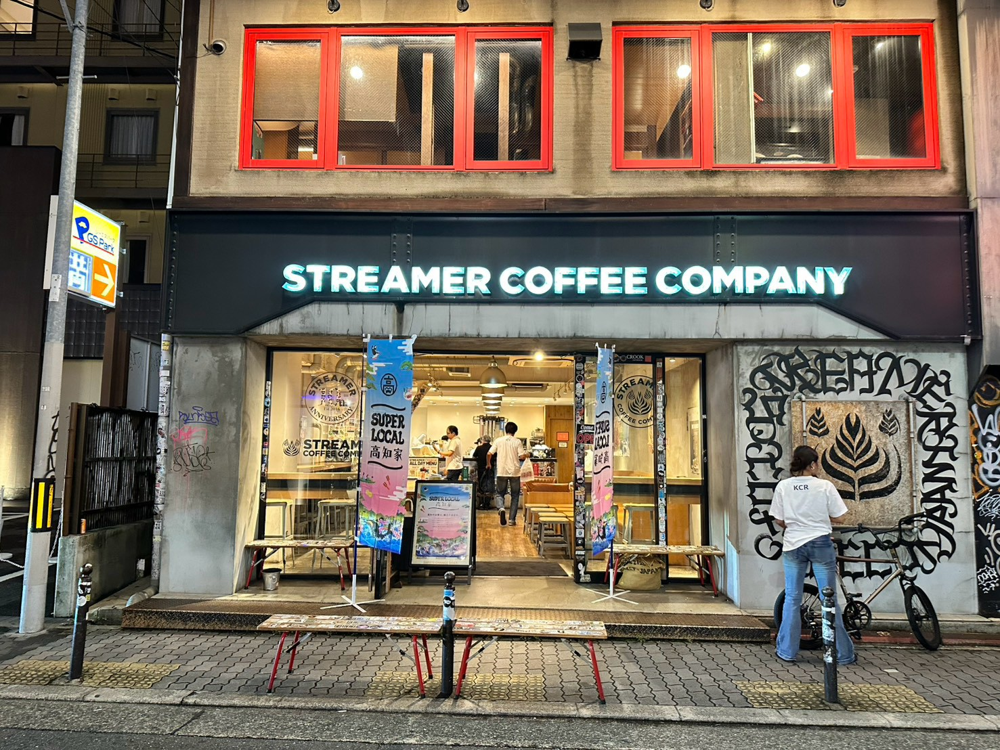
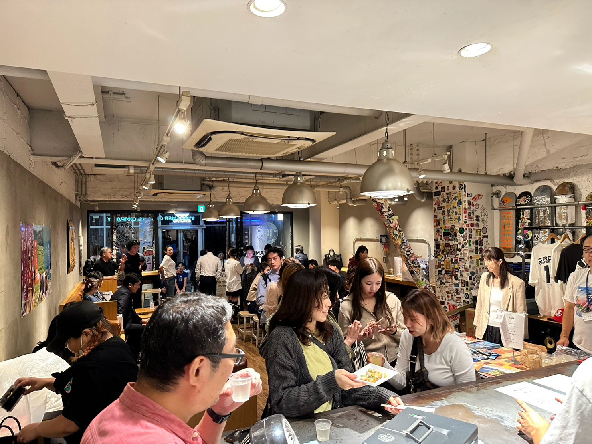
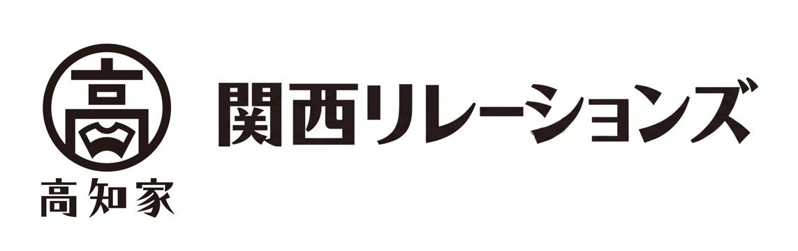

TOSA TO SAKE高知のお酒と食材が、人をつなぐ。
第1回 とさとさけ
心斎橋のストリーマーコーヒーカンパニーで、高知のお酒と、アンテナショップで販売されている高知の食材を楽しむイベントを開催しました。
会場には多くの方が集まり、食とお酒を囲んで交流が生まれる、大盛況の一夜となりました。
- 開催日
- 2026年10月24日
- 会場
- ストリーマーコーヒーカンパニー（心斎橋）
- 主催
- 高知家関西リレーションズ（LOCALSHIFTのプロジェクト）

KOCHI × KANSAI室戸の魅力を、人と人のつながりへ。


室戸岬灯台：Kzaral / Wikimedia Commons · CC BY 2.0
室戸のまちと海：Naokijp / Wikimedia Commons · CC BY-SA 4.0
写真は縦横比を保って表示し、切り抜きや色の加工はしていません。
01 / 私たちについて
地域には、まだ出会っていない魅力がある。
人には、その魅力を伝える力がある。
LOCALSHIFTは、人と地域の交流を育てるNPO法人です。食や文化を紹介するイベントを通じて、その土地を知り、関わり続けるきっかけをつくります。
まずは高知県室戸市の皆さまと、継続的な交流を育んでいきたいと考えています。地域の声を大切にしながら活動を重ね、その経験をほかの地域との活動にも生かしていきます。
団体概要02 / 活動実績
これまでの活動と、これからの開催予定をご紹介します。
各回共通の会場：ストリーマーコーヒーカンパニー（心斎橋）

TOSA TO SAKE高知のお酒と食材が、人をつなぐ。
心斎橋のストリーマーコーヒーカンパニーで、高知のお酒と、アンテナショップで販売されている高知の食材を楽しむイベントを開催しました。
会場には多くの方が集まり、食とお酒を囲んで交流が生まれる、大盛況の一夜となりました。
KOCHI × KANSAI
高知と関西をつなぐ、私たちの取り組み。
LOCALSHIFTのプロジェクトの一つとして、高知家関西アンバサダーを中心に活動しています。高知と関西の文化や知恵をつなぎ、人と人との関係を育てていきます。
取り組みについて相談する
人とつながり、心で動かし、社会を動かす。
03 / これからの取り組み
自治体やパートナーの皆さまと、
こんな活動を目指しています。
食や文化をきっかけにしたイベントや、地域・企業間のネットワークづくりを通じて、関係と信頼を育む場をつくります。
交流・ネットワーク地域や組織に蓄積された知識・ノウハウを言葉にし、マニュアルや研修、講座として共有する取り組みを目指します。
知識の共有・学び地域の魅力や活動のストーリーを発信し、「関わりたい」「応援したい」と思う人とのつながりを育てます。
発信・コミュニティ事業やイベントのアイデア段階から、お気軽にご相談ください。
自治体・団体のご相談はこちら04 / 大切にしている考え方
知識や信頼、共感は、人や地域と関わる中で少しずつ積み重なります。私たちは、こうした目に見えない価値を「6つの資本」として大切にしています。
ORGANIZATION
CONTACT & JOIN US
一緒に地域の可能性を広げる仲間をお待ちしています。
地域の食や文化を生かしたイベント、交流の場づくりなど、まずはお話をお聞かせください。
事業・イベントの相談活動への参加や、寄付についてのご相談をメールで受け付けています。お気軽にご連絡ください。
参加・寄付について相談ボタンを押すと、お使いのメールアプリが開きます。
アプリを利用していない方は、こちらのアドレスへお送りください。